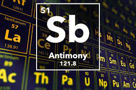

ANTIMONY

PROPERTIES
1)Antimony is a semimetallic chemical element .
2)It can exist in two forms: the metallic form is bright, silvery, hard and brittle; the non metallic form is a grey powder.
3) Antimony is a poor conductor of heat and electricity,
4)it is stable in dry air and is not attacked by dilute acids or alkalis.
5)Antimony and some of its alloys expand on cooling.
6)Antimony has been known since ancient times.
7)It is sometimes found free in nature, but is usually obtained from the ores stibnite (Sb2S3) and valentinite (Sb2O3).
8)Nicolas Lémery, a French chemist, was the first person to scientifically study antimony and its compounds.
9)He published his findings in 1707. Antimony makes up about 0.00002% of the earth's crust.
10)Very pure antimony is used to make certain types of semiconductor devices, such as diodes and infrared detectors.
11)Antimony is alloyed with lead to increase lead's durability.
12) Antimony alloys are also used in batteries, low friction metals, type metal and cable sheathing, among other products .
13) Antimony compounds are used to make flame-proofing materials, paints, ceramic enamels, glass and pottery.
14) The ancient Egyptians used antimony, in the form of stibnite, for black eye make-up.
15)Antimony occurs naturally in the environment.
Reaction of ANTIMONY
Upon heating, antimony reacts with oxygen in air to form the trioxide antimony(III) oxide, Sb2O3. The flame is bluish white.
4Sb(s) + 3O2(g) ? 2sb2O3(s)
At red heat, antimony reacts with water to form the trioxide antimony(III) oxide, Sb2O3. Antimony reacts moreslowly at ambient temperatures.
2Sb(s) + 3H2O(g) ? Sb2O3(s) + 3H2(g)
Antimony reacts under controlled conditions with the halogens fluorine, F2, chlorine, Cl2, bromine, Br2, and iodine, I2, to form the respective trihalides antimony(III) fluoride, SbF3, antimony(III) chloride, SbCl3, antimony(III) bromide, SbBr3, and antimony(III) iodide, SbI3.
2Sb(s) + 3F2(g) ?2SbF3(s) [white]
2Sb(s) + 3Cl2(g) ? 2SbCl3(s) [white]
2Sb(s) + 3Br2(g) ?2SbBr3(s) [white]
2Sb(s) + 3I2(g) ? 2SbI3(s) [red]